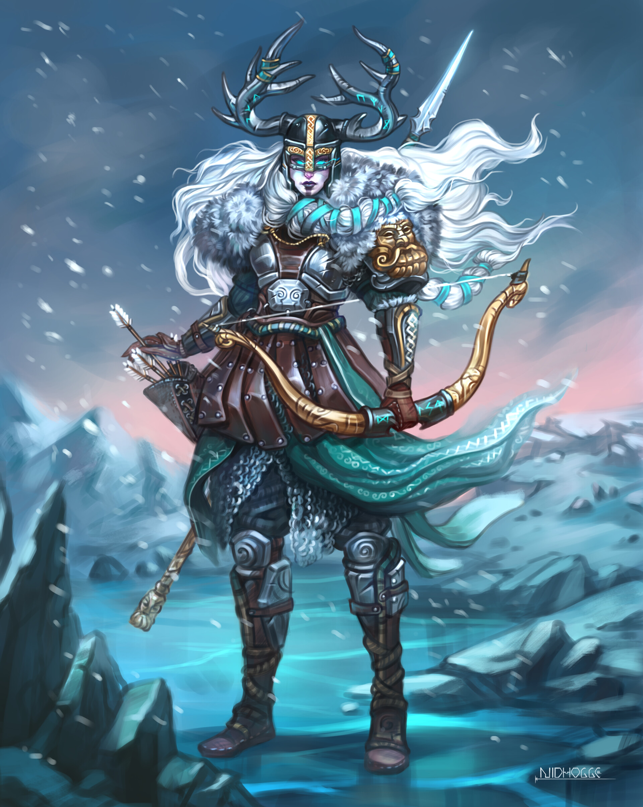

In Norse mythology, Skaði (/ˈskɑːði/, sometimes anglicized
as
Skadi, Skade, or Skathi) is a
jötunn and goddess associated with bowhunting, skiing, winter, and mountains. Skaði is attested in the
Poetic Edda, compiled in the 13th century from earlier traditional sources; the Prose Edda and in
Heimskringla, written in the 13th century by Snorri Sturluson, and in the works of skalds.
Skaði is the daughter of the deceased Þjazi, and Skaði
married the god
Njörðr as part of the
compensation
provided by the gods for killing her father Þjazi. In Heimskringla, Skaði is described as having split
up
with Njörðr and as later having married the god Odin, and that the two produced many children together.
In
both the Poetic Edda and the Prose Edda, Skaði is responsible for placing the serpent that drips venom
onto
the bound Loki. Skaði is alternately referred to as Öndurguð (Old Norse 'ski god') and Öndurdís (Old
Norse
'ski dís').
The etymology of the name Skaði is uncertain, but may
be connected
with the original form of
Scandinavia.
Some place names in Scandinavia refer to Skaði. Scholars have theorized a potential connection between
Skaði
and the god Ullr (who is also associated with skiing), a particular relationship with the jötunn Loki,
and
that Scandinavia may be related to the name Skaði (potentially meaning 'Skaði's island') or the name may
be
connected to an Old Norse noun meaning 'harm'. Skaði has inspired various works of art.